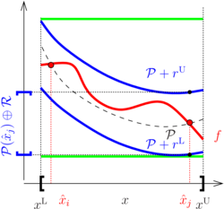
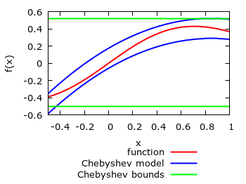

- Generated on for MC++ by
 1.15.0
1.15.0
|
MC++
|
A \(q\)th-order Chebyshev model of a Lipschitz-continuous function \(f:\mathbb{R}^n\to\mathbb{R}\) on the domain \(D\), consists of a \(q^{\rm th}\)-order multivariate polynomial \(\mathcal P\) in Chebyshev basis plus a remainder term \(\mathcal R\), so that
\begin{align*} f({x}) \in \mathcal P({x}) \oplus \mathcal R, \quad \forall {x}\in D. \end{align*}
The polynomial part \(\mathcal P\) is propagated symbolically and accounts for functional dependencies. The remainder term \(\mathcal R\), on the other hand, is traditionally computed using interval analysis [Brisebarre & Joldes, 2010]; see figure below. More generally, convex/concave bounds or an ellipsoidal enclosure can be computed for the remainder term of vector-valued functions too [Bompadre et al, 2013; Villanueva et al, 2015]. In particular, it can be established that the remainder term has convergence order (no less than) \(q+1\) with respect to the diameter of the domain set \(D\) under mild conditions [Rajyaguru et al, 2017]. Global convergence properties can also be established for certain operations.
 "/> |
Various implementations of Chebyshev model are available in MC++:
Implementation of these classes relies on the operator/function overloading mechanism of C++. This makes the computation of Chebyshev models both simple and intuitive, similar to computing function values in real arithmetics or function bounds in interval arithmetic (see Non-Verified Interval Arithmetic for Factorable Functions). Moreover, the types mc::CVar, mc::SCVar and mc::SICVar can be used to evaluate DAG expression in Chebyshev arithmetic using one the mc::FFGraph::eval methods. They can also be used as the template parameter of other types in MC++ as well as types fadbad::F, fadbad::B and fadbad::T of FADBAD++ for computing Chebyshev models of a function's derivatives or Taylor coefficients.
These classes are themselves templated in the type used to propagate bounds on the remainder term (classes mc::CModel, mc::CVar, mc::SCModel, mc::SCVar) or the polynomial coefficients (classes mc::SICModel, mc::SICVar). By default, mc::CModel and mc::CVar can be used with the non-verified interval type mc::Interval of MC++. For reliability, however, one may prefer verified interval arithmetic such as PROFIL (header file mcprofil.hpp), Boost Interval Arithmetic Library (header file mcboost.hpp) or FILIB++ (header file mcfilib.hpp) .
As well as propagating Chebyshev models for factorable functions, bounds on the Chebyshev model range (multivariate polynomial part) can also be computed. We note that computing exact bounds for multivariate polynomials is a hard problem in general. Instead, a number of computationally tractable, yet typically conservative, bounding approaches are implemented, which include:
Examples of Chebyshev models (blue lines) constructed with mc::CModel and mc::CVar are shown on the figure below for the factorable function \(f(x)=x \exp(-x^2)\) (red line) for \(x\in [-0.5,1]\). Also shown on these plots are the interval bounds computed from the Chebyshev models.
 |